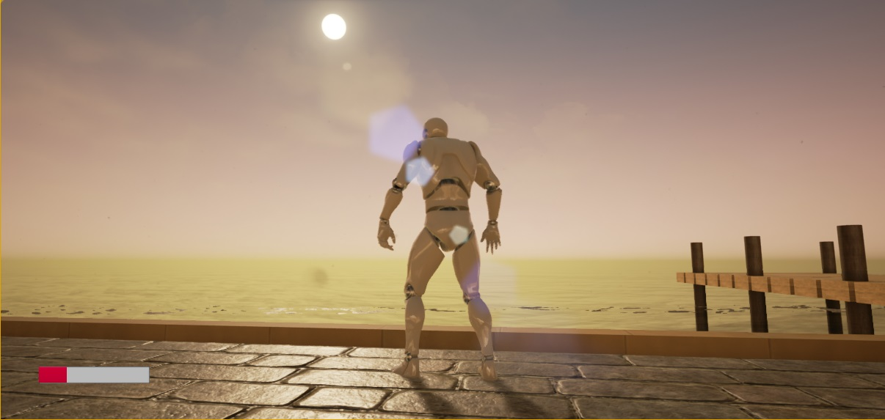
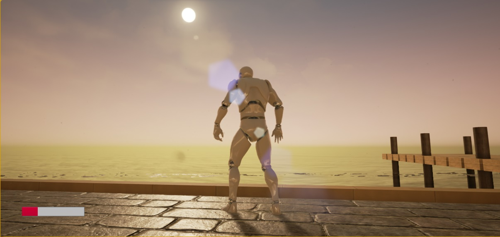
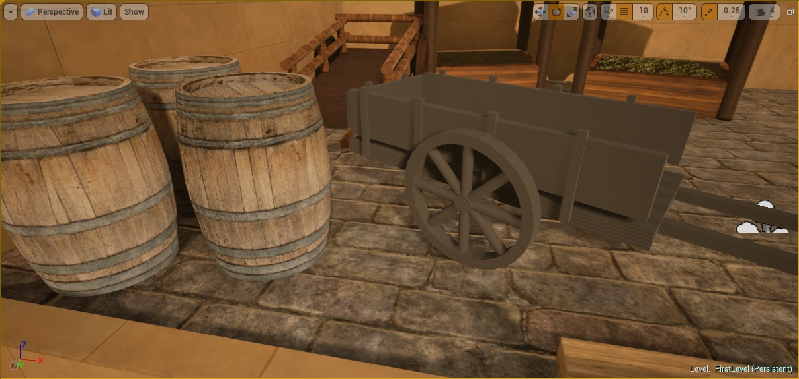
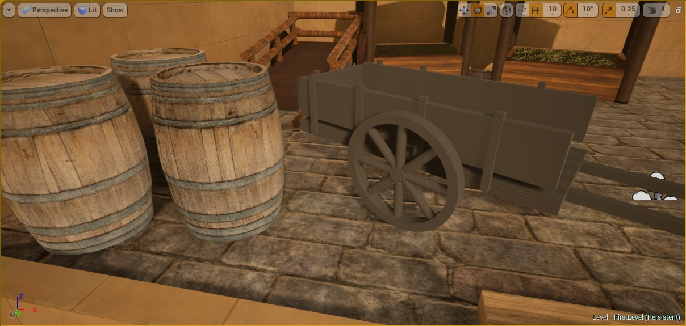

FALLING STAR
Description
I started this project in 2015 when I wanted to develop a 3D video game using Unreal Engine. I started this project to guide the development of my own game engine. In addition, I worked at quality assurance (QAQ-Activision) during this project, which meant that I had to organize myself to find time for development. J'ai parti ce projet en 2015 lorsque je voulais développer un jeu vidéo 3D à l'aide de Unreal Engine. J'ai commencé ce projet afin d'orienter le développement de mon propre moteur de jeu. De plus, je travaillais en assurance de qualité (QAQ-Activision) lors de ce projet, ce qui a fait que j'ai dû m'organiser pour trouver du temps pour le développement.
List of developed elements Liste des éléments développés
- Created a level Création d'un niveau
- Added dust particles in the air Ajout de particules de poussière dans l'air
- Added a script to open a door Ajout d'un script d'ouverture d'une porte
- Added an atmospheric fog Ajout d'un brouillard atmosphérique
- Added a realistic water surface Ajout d'une surface d'eau réaliste
- The water waves with displacement mapping L'eau a des vagues avec du "displacement"
- The water is translucent and colored L'eau est translucide et colorée
- Water has light reflection L'eau a de la réflexion de la lumière
- Player's animation changes when underwater L'animation du joueur change lorsqu'il est sous l'eau
- The display has a blue tint when the player is underwater L'affichage a une teinte bleue lorsque le joueur est sous l'eau
- Added sun reflection lenses Ajout de lentilles de reflet du soleil
- Added a HUD for the player's life Ajout d'un HUD pour la vie du joueur
- Added a main menu Ajout d'un menu principal
- Added a pause menu Ajout d'un menu pause
- Added an attack feature Ajout d'une fonctionnalité d'attaque
- Projectile goes in front of the player Projectile qui se dirige en face du joueur
- Added a crosshair Ajout d'une réticule de tir
- Added a explosion sound on impact Ajout d'un son d'explosion à l'impact
- Destruction of the barrels and of the projectile upon impact Destruction des barils et du projectile lors de l'impact
- 3D modeling in Blender Modélisation de modèles 3D dans Blender
Video Vidéo

Screenshots Captures d'écran
 

 
